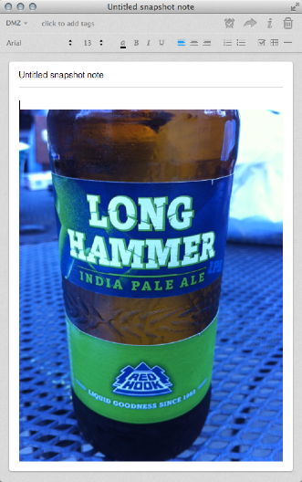
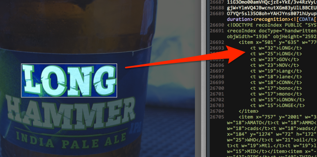

Поиск текста в изображениях — достаточно популярная функция Evernote. Мы бы хотели рассказать, как она работает и ответить на некоторые частые вопросы.
Как происходит обработка изображений
Когда в процессе синхронизации заметка отправляется в Evernote, любые ресурсы, включенные в эту заметку, с MIME-типами PNG, JPG или GIF пересылаются на отдельный набор серверов, занятых исключительно распознаванием текста во вложенных изображениях и возвращением найденных результатов. Эти результаты добавляются в заметку в виде скрытого (точнее не видимого при просмотре заметки) набора метаданных под названием recoIndex. Весь recoIndex можно посмотреть, если экспортировать заметку в файл ENEX.
Например, вот старая заметка в одном из наших аккаунтов со снимком пивной бутылки.

Если экспортировать эту заметку как файл ENEX — портативный формат экспорта в XML для заметок Evernote — и перейти к концу файла, можно увидеть раздел recoIndex. В recoIndex содержится несколько элементов item. Каждый такой элемент соответствует прямоугольнику, внутри которого система распознавания Evernote подозревает наличие текста.
Каждый элемент item содержит четыре атрибута: x и y, соответствующие координатам верхнего левого угла прямоугольника, а также w и h, означающие его ширину и высоту.
При оценке изображения на предмет текстового содержимого создается набор возможных совпадений в виде дочерних элементов, связанных с тем или иным item. Каждому совпадению присваивается вес (атрибут w), числовое значение, отражающее вероятность, предложенный текст соответствует реальному в изображении.
Результаты распознавания встраиваются в заметку и впоследствии синхронизируются с клиентскими приложениями пользователя. Начиная с этого момента, текст, найденный в изображении, становится доступным для поиска.
Вот recoIndex в заметке, показанной выше.
<?xml version="1.0"?>
<recoIndex docType="handwritten" objType="image" objID="a284273e482578224145f2560b67bf44" engineVersion="3.0.17.12" recoType="service" lang="en" objWidth="1936" objHeight="2592">
<item x="853" y="1278" w="14" h="17">
<t w="31">II</t>
<t w="31">11</t>
<t w="31">ll</t>
<t w="31">Il</t>
</item>
<item x="501" y="635" w="770" h="254">
<t w="32">LONG</t>
<t w="25">LONG</t>
<t w="23">GOV</t>
<t w="23">NOV</t>
<t w="19">Lang</t>
<t w="18">lane</t>
<t w="18">CONN</t>
<t w="17">bono</t>
<t w="17">mono</t>
<t w="15">LONON</t>
<t w="15">LONGE</t>
</item>
<item x="757" y="2001" w="337" h="63">
<t w="23">APONTE</t>
<t w="23">HAWK</t>
<t w="19">Armas</t>
<t w="19">Haas</t>
<t w="18">AMBRY</t>
<t w="18">AMATO</t>
<t w="18">AMMO</t>
<t w="18">areas</t>
<t w="18">rads</t>
<t w="18">pads</t>
<t w="18">lads</t>
<t w="18">fads</t>
<t w="18">dads</t>
<t w="18">cads</t>
<t w="18">wads</t>
<t w="18">WONKS</t>
<t w="18">AMULET</t>
</item>
<item x="0" y="1284" w="128" h="730">
<t w="18">TWELFTH</t>
</item>
<item x="184" y="1274" w="72" h="172">
<t w="32">MIL</t>
<t w="31">MIT</t>
<t w="30">lot</t>
<t w="28">It***</t>
<t w="25">It**»</t>
<t w="25">Ii**»</t>
<t w="25">WHO</t>
<t w="21">oil</t>
<t w="20">LOL</t>
<t w="19">TWX</t>
<t w="19">TWI</t>
<t w="19">mill</t>
<t w="19">Ott</t>
<t w="19">list</t>
<t w="19">LWT</t>
<t w="19">Mtl.</t>
<t w="19">limit</t>
<t w="19">tfiii</t>
<t w="19">tot</t>
<t w="18">Tim</t>
<t w="18">pol</t>
<t w="18">NHL</t>
<t w="17">this</t>
<t w="15">MID</t>
</item>
<!-- ... -->
</recoIndex>
Набор recoIndex содержит элементы item и t (совпадения). Как вы можете заметить, большинство элементов item имеют несколько элементов t, каждому из которых присвоен определенный вес. Когда пользователь начинает искать текст в клиенте Evernote, поиск происходит и по содержимому элементов t:

Как происходит обработка PDF
Система распознавания текста Evernote также работает с файлами PDF, но их обработка отличается от изображений. В этом случае создается дополнительный документ PDF, где содержится распознанный текст. Это документ добавляется в заметку с оригинальным PDF. Он не видим для пользователя и присутствует только для поисковых нужд. Он также не учитывается в ежемесячном доступном объеме места для загрузки данных пользователя.
Чтобы PDF был доступен для распознавания, он должен соответствовать двум критериям:
На практике этим требованиям не удовлетворяет множество PDF, генерируемых из текстовых форматов другими приложениями, такими как текстовые редакторы. Файлы PDF, создаваемые сканерами, обычно отвечают вышеуказанным критериям. Правда, если программное обеспечение сканера выполняет свое собственное распознавание текста в получаемых PDF, файл также будет исключен из обработки нашим сервисом.
Если экспортировать заметку с PDF, который прошел через распознавание текста, то можно заметить в документе два узла: data и alternate-data. В data содержится закодированная в 64-разрядный код версия оригинального PDF, а в alternative-data — версия, доступную для поиска.
Частые вопросы
Какой текст можно распознать?
Практически любой, главное, чтобы система распознавания поняла, что это текст. Как машинописный (например, уличные указатели или плакаты), так и рукописный (даже если у вас не самый аккуратный почерк в мире) текст будет обнаружен системой.
Что может повлиять на распознавание, так это ориентация текста. Текст, найденный в изображение, оценивается на наличие совпадений в трех вариантах ориентации:
Текст, расположенный в изображении под каким-то другим углом, будет проигнорирован. Это касается и текста по диагонали, и отраженного зеркально.
Важно также помнить, что нет совершенной системы распознавания текстов, и возможно, текст не будет распознан вопреки вашим ожиданиям. Вместе с тем, движок распознавания постоянно дорабатывается и улучшается, чтобы достичь большей точности.
Можно ли использовать Evernote для создания текстовой версии из изображения с текстом?
Нет. Как упоминалось выше, система проверки совпадений выдает несколько вариантов. В большинстве случаев для того или иного прямоугольника будет существовать несколько потенциальных совпадений разной степени точности.
Насколько быстро происходит распознавание?
При синхронизации заметки с изображением картинка отправляется на обработку группе серверов распознавания текста. Система основана на принципе очереди, то есть каждое новое изображение занимает место в конце и будет обработано после всех стоящих до нее.
Скорость зависит от размера очереди в момент отправки изображения. Как правило, время ожидания не превышает часа.
Сколько языков поддерживает система распознавания Evernote?
На данный момент Evernote может индексировать тексты на 28 языках в машинописном и на 24 в рукописном виде. Регулярно добавляются новые языки, а качество работы с существующими улучшается. Пользователи могут указать используемые языки, для которых следует искать совпадения при индексации, изменив соответствующие параметры в персональных настройках.
Где можно узнать больше о системе распознавания Evernote?
Мы ранее опубликовали пару статей на эту тему:
Также можно ознакомиться с обзором специфики распознавания рукописного текста в европейских и азиатских языках.